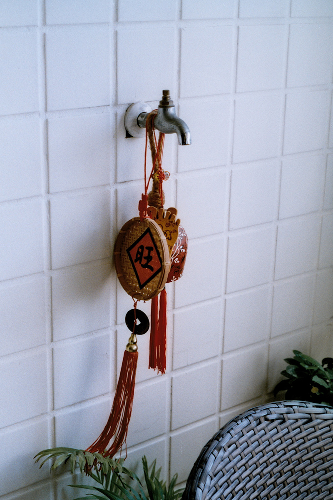
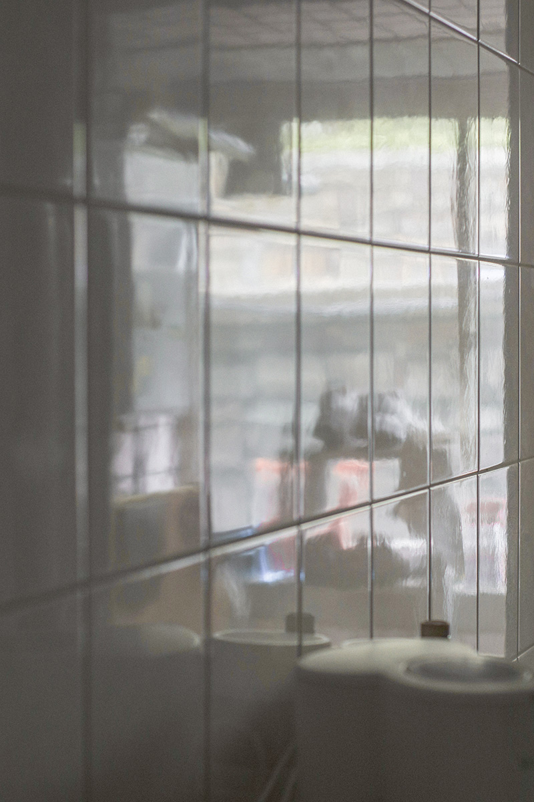

|


|
Insight, 翁逸云
@_bnpowj 原先只是想記錄整天待在家的日子，並沒有特別去挖掘什麼深刻思想，底片洗出來卻發現這些照片出乎意料地平靜，不同於我在外捕捉的那些影像。我想起來平常追逐光影，總不自覺地將鏡頭朝向外，現在因為無法出門，終於願意走到光線微弱的角落。 取名為insight，妄想不踏出家門也能從中汲取快樂，平凡老百姓沒有深刻動人的觀察力，也要強顏歡笑，假裝自己有一番獨到見解。 拆開來變成in sight，這些在身邊朝夕相處的物事終於映入眼簾，（我）不再視而不見。快門按下之前她們是飄蕩不定的流光，按下快門才終於組織成（旁人得以窺見的）形體。 念起來也像inside，我向無光之處探尋，因為無光，所以容易晃動、模糊、失焦，也有那些無法分清左右、前後，不知所以的影像。最後我從窗邊走回陽光照不到的房間，躲在裡頭阻擋時間的流動，甘願無光。 view on instagram |